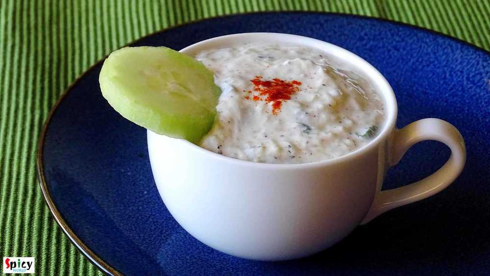
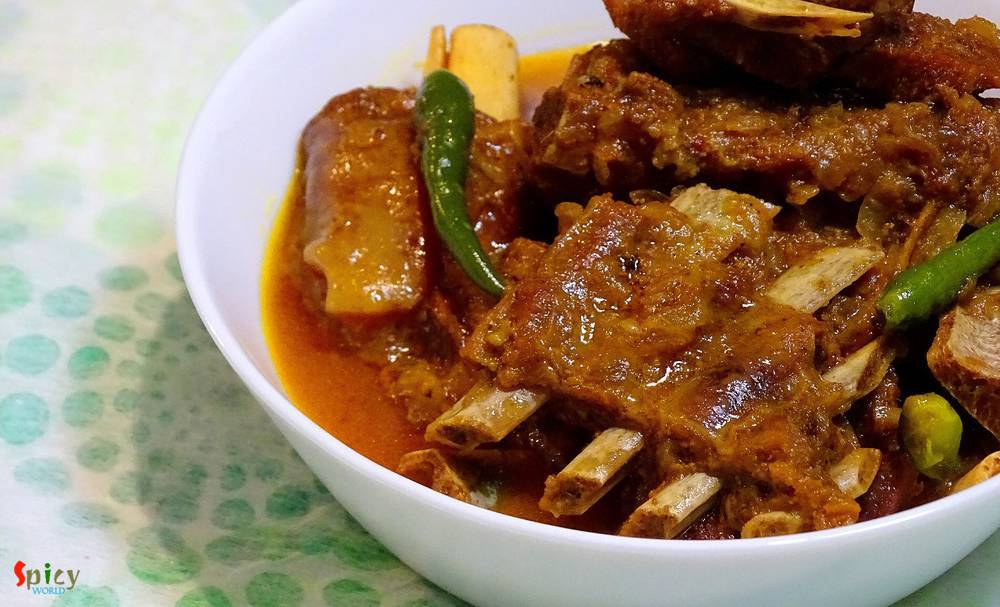

Simple and Easy Recipes

Featured Post
Jan 31, 2016
I am a homemaker and a food blogger. Both my husband and me love to eat different food as well as travel various US cities. I was planning to share our travel and food experience with you. Presently we are staying at Austin and our last trip was to California on June, 2015. You can think of how much bore we were for not going outside Austin for past 7 months. We celebrated 'Durga Puja', 'Christmas ...


Nonveg Recipe
Jan 27, 2016
We both are not frequent egg eaters, but when we do, we try to make the curry yumm yumm !! One of our favourite egg curry is 'sorshe dim posto'- traditional bengali dish. 'Sorshe' means mustard seeds and 'posto' means poppy seeds. Lunch dishes always plays a big part in Bengali cuisine. There are several typically bengali dishes which you can only enjoy as lunch with steamed rice and may be after ...

Nonveg Recipe
Jan 27, 2016
I have tried some middle eastern platters in couple of restaurants at Austin. I have fallen in love with their kebabs. Once you tasted it, you will never forget that unique taste. I also love their shawarma chicken. So, I reasearched how to make those kebabs at home and the easiest one is this 'turkish kebab'. I also mentioned it as 'sish kebab' because in several places I found the same recipe bu ...
 / Kosha Mangsho (Thakurbari style)")
Nonveg Recipe
Jan 26, 2016
'Thakurbari' means Rabindranath Tagore's home, which is situated at Jorashanko, Kolkata. Tagore's family is popular for many things and one of them is 'cooking'. Nowadays, you can watch plenty of cooking programmes in TV, but when I was in school, only few magazines used to publish cooking recipes on weekends only. The craze was also different in that time. I still can remember how my mom and gran ...

Nonveg Recipe
Jan 26, 2016
Its winter, the season of colourful veggies... One of my favourite veggie is 'green peas' / Koraishuti. You can make so many items with these tiny green balls like, 'matar paneer', 'peas kachori', 'dum aloo with peas', 'khichdi', 'veg daal', 'cabbage curry with peas' etc. But 'fish curry with green peas paste' may seems new to somebody. Its nothing but a dry fish curry with a tasty extra addition ...
 / Potato and Cauliflower curry / Aloo Fulkopir torkari")
Veg Recipe
Jan 25, 2016
We, nonvegetarian people, generally ordered nonveg dishes while eating at restaurants or dhabas. But we also love to eat home cooked vegetarian meals. In one of our trip to Digha before marriage, we made a stop at the famous 'Sher-e-punjab' for heavy breakfast. We ate there several times before but never did breakfast, so, that was our first time. As it was morning, we orderd veg like 'aloo parath ...

Veg Recipe
Jan 25, 2016
Last month we, two, went for shopping at our nearest outlet mall. We often go there for shopping. A food truck 'Kebabeque' was a new edition to the food court. They served middle eastern food like 'falafel rice', 'hummus', 'shawarma platter' etc. We took a rice bowl with falafel. They served a good amount of flavourful saffron rice, fresh spinach, some good falafel, tasty hummus and tzatziki sauce ...

Nonveg Recipe
Jan 21, 2016
Almost every one has a slight weakness over chinese food. Taste and flavour of their food is totally unique. In Kolkata, many street food joints sell chinese food like various types of chowmin, chilli chicken, manchurian, lollipops etc. They all tastes really good. Today I am sharing the delicious recipe of 'mix Hakka noodles'. The dish has lots of vegetables, chicken and also egg, that's why the ...

Nonveg Recipe
Jan 20, 2016
Few days before I saw a fantastic picture of mutton curry in facebook. The caption was 'adabata aar kacha lonka diye mutton'. After seeing that picture, I decided to make it on dinner with some steamed rice. As the picture didn't provide the detailed recipe, except ginger and green chilies, I followed my own instinct while making the curry. After finishing, I got a thin, flavorful, tasty gravy and ...

Nonveg Recipe
Jan 19, 2016
As I am Bengali, my favourite fish curry is this one. My husband is also a huge fan of fish and specially this curry. It goes best with hot plain rice. This is a very easy process and the recipe is pretty simple. Try this in your kitchen and let me know how it tastes.